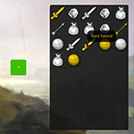
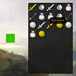

Inventory
https://github.com/pokepetter/ursina/blob/master/samples/inventory.py


class Inventory(Entity ):
def __init__(self, width=5 , height=8 , **kwargs):
super().__init__(
parent = camera.ui,
model = Quad(radius=.0 1 5 ),
texture = 'white_cube' ,
texture_scale = (width, height),
scale = (width*.1 , height*.1 ),
origin = (-.5 ,.5 ),
position = (-.3 ,.4 ),
color = color.hsv(0 , 0 , .1 , .9 ),
)
self.width = width
self.height = height
for key, value in kwargs.items():
setattr (self, key, value)
def find_free_spot(self):
for y in range (self.height):
for x in range (self.width):
grid_positions = [(int(e.x*self.texture_scale[0 ]), int(e.y*self.texture_scale[1 ])) for e in self.children]
print (grid_positions)
if not (x, -y) in grid_positions:
print ('found free spot:' , x, y)
return x, y
def append(self, item, x=0 , y =0 ):
print ('add item:' , item)
if len(self.children) >= self.width*self.height:
print ('inventory full' )
error_message = Text('<red>Inventory is full!' , origin =(0 ,-1 .5 ), x=-.5 , scale =2 )
destroy(error_message, delay =1 )
return
x, y = self.find_free_spot()
icon = Draggable(
parent = self,
model = 'quad' ,
texture = item,
color = color.white,
scale_x = 1 /self.texture_scale[0 ],
scale_y = 1 /self.texture_scale[1 ],
origin = (-.5 ,.5 ),
x = x * 1 /self.texture_scale[0 ],
y = -y * 1 /self.texture_scale[1 ],
z = -.5 ,
)
name = item.replace('_' , ' ' ).title()
if random.random() < .2 5 :
icon.color = color.gold
name = '<orange>Rare ' + name
icon.tooltip = Tooltip(name)
icon.tooltip.background.color = color.hsv(0 ,0 ,0 ,.8 )
def drag():
icon.org_pos = (icon.x, icon.y)
icon.z -= .0 1 # ensure the dragged item overlaps the rest
def drop():
icon.x = int((icon.x + (icon.scale_x/2 )) * self.width) / self.width
icon.y = int((icon.y - (icon.scale_y/2 )) * self.height) / self.height
icon.z += .0 1
# if outside, return to original position
if icon.x < 0 or icon.x >= 1 or icon.y > 0 or icon.y <= -1 :
icon.position = (icon.org_pos)
return
# if the spot is taken, swap positions
for c in self.children:
if c == icon:
continue
if c.x == icon.x and c.y == icon.y:
print ('swap positions' )
c.position = icon.org_pos
icon.drag = drag
icon.drop = drop
if __name__ == '__main__' :
app = Ursina()
inventory = Inventory()
def add_item():
inventory.append(random.choice(('bag' , 'bow_arrow' , 'gem' , 'orb' , 'sword' )))
add_item()
add_item()
add_item_button = Button(
scale = (.1 ,.1 ),
x = -.5 ,
color = color.lime.tint(-.2 5 ),
text = '+' ,
tooltip = Tooltip('Add random item' ),
on_click = add_item
)
background = Entity (parent =camera.ui, model ='quad' , texture ='shore' , scale_x =camera.aspect_ratio, z =1 )
Cursor(texture ='cursor' , scale =.1 )
mouse.visible = False
app.run()